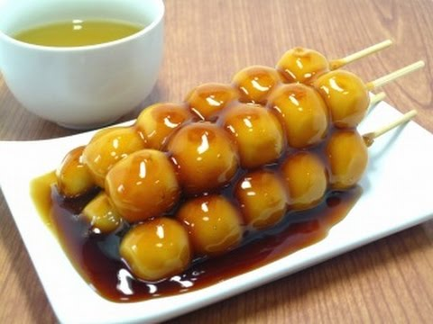

|  |
- É uma sobremesa que aparece bastante nos desenhos animados japoneses e uma das sobremesas mais apreciadas entre os jovens e adultos. O Dango é uma bolinha feita de mochiko (farinha de arroz), e que pode ser doce (com anko) ou salgado (com shoyu). Normalmente vem três bolinhas num Kushi (espetos de bambu) e dependendo da estação do ano e da localidade existem várias formas de serem consumidos.
É uma receita bastante simples, e que tem como ingrediente principal o ingrediente essencial da cozinha japonesa: o arroz. No Japão, o dango é feito com joshinko, um tipo de farinha de arroz, e shiratamako, outro tipo de farinha, de arroz glutinoso.
|